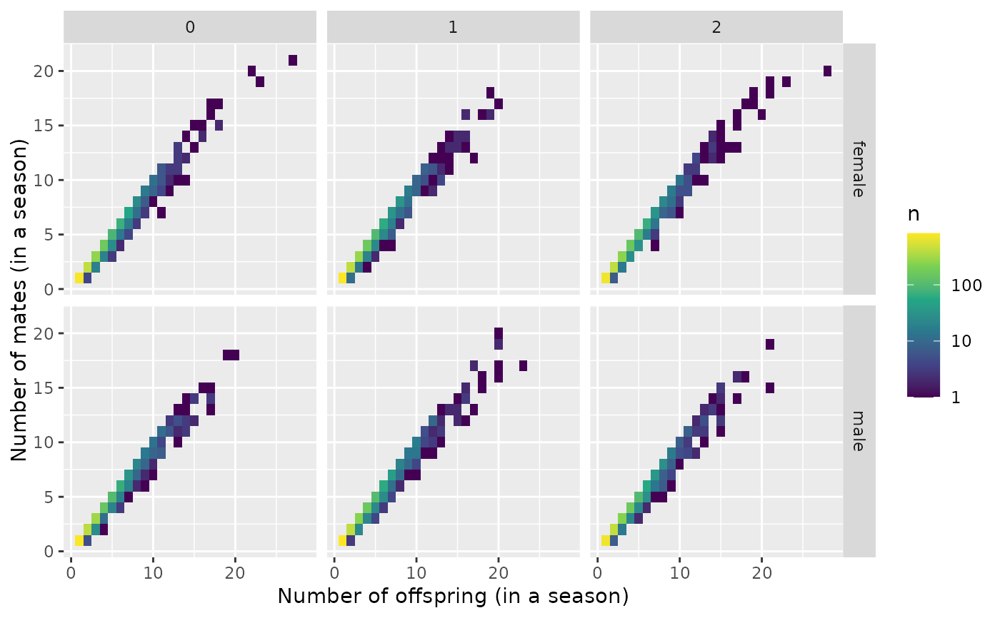

count_and_plot_mate_distribution.RdThis just tallies up the information from the pedigree. It will plot things faceted by pop (over rows) and sexes (over columns).
count_and_plot_mate_distribution(P)the pedigree from the simulation, like that returned in the pedigree component
of the list returned by slurp_spip().
A list with two components with names:
mate_counts: A tibble with information about the number of mates with which
a parent produced offspring each year. It has the columns:
sex: the sex of this parent
year: the year during which the mating occurred
pop: the population this parent was in
parent: the ID of the parent
num_offs: the number of offspring this parent had in total
num_mates: the number of mates this parent had
plot_mate_counts: a ggplot object, faceted on a grid by population in columns
and sex in rows. The x-axis is the number of offspring (in a season), the y-axis is the
number of mates in a season, and the fill color of the grid gives the number of parents
with that number of offspring and mates.
result <- count_and_plot_mate_distribution(three_pops_no_mig_slurped_results$pedigree)
# have a look at the results:
result$mate_counts
#> # A tibble: 12,417 × 6
#> sex year pop parent num_offs num_mates
#> <chr> <int> <int> <chr> <int> <int>
#> 1 female 5 0 F0_0_1 1 1
#> 2 female 5 0 F0_0_12 3 3
#> 3 female 5 0 F0_0_14 1 1
#> 4 female 5 0 F0_0_16 7 7
#> 5 female 5 0 F0_0_19 3 3
#> 6 female 5 0 F0_0_21 1 1
#> 7 female 5 0 F0_0_22 1 1
#> 8 female 5 0 F0_0_23 2 2
#> 9 female 5 0 F0_0_24 23 19
#> 10 female 5 0 F0_0_26 7 6
#> # ℹ 12,407 more rows
result$plot_mate_counts
